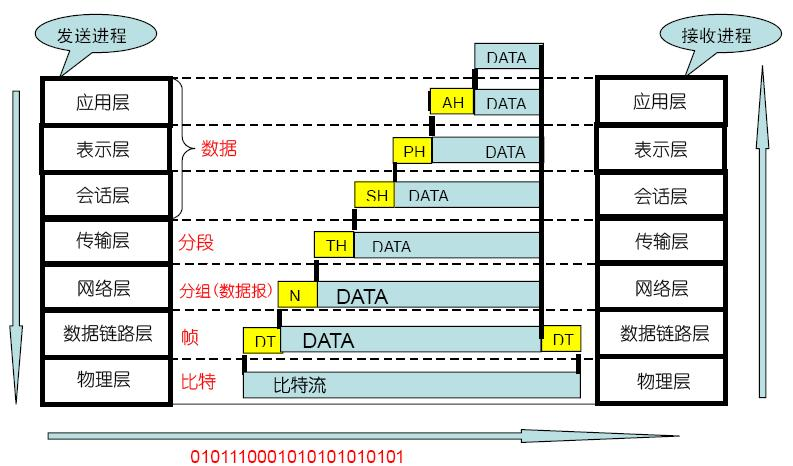

传输层的作用
1. 传输层复用和分用的含义
作用：传输层为它上面的应用层提供通信服务。 在OSI七层参考模型中，传输层是面向通信的最高层，也是用户功能的最底层。 传输层两大重要的功能：复用 和 分用。
复用：在发送端，多个应用进程公用一个传输层；
分用：在接收端，传输层会根据端口号将数据分派给不同的应用进程。 和网络层的区别：
2. 传输层和网络层的区别
网络层为不同主机提供通信服务，而传输层为不同主机的不同应用提供通信服务。 网络层只对报文头部进行差错检测，而传输层对整个报文进行差错检测。
UDP
1. UDP协议的特点
-
UDP只在IP数据报服务的基础上增加了少量的功能：复用与分用、对整个报文的差错检测。
-
UDP是无连接的 通信前不需要建立连接，通信结束也无需释放连接。
-
UDP是不可靠的 它是尽力而为交付，不能确保每一个数据报都送达。
-
UDP是面向报文的 所谓『面向报文』就是指：UDP数据传输的单位是报文，且不会对数据作任何 拆分 和 拼接 操作。 在发送端，应用程序给传输层的UDP什么样的数据，UDP不会对数据进行切分，只增加一个UDP头并交给网络层。 在接收端，UDP收到网络层的数据报后，去除IP数据报头部后遍交给应用层，不会作任何拼接操作。
-
UDP没有拥塞控制 UDP始终以恒定的速率发送数据，并不会根据网络拥塞情况对发送速率作调整。这种方式有利有弊。 弊端：网络拥塞时有些报文可能会丢失，因此UDP不可靠。 优点：有些使用场景允许报文丢失，如：直播、语音通话，但对实时性要求很高，此时UDP还是很有用武之地的。
-
UDP支持一对一、一对多、多对多、多对一通信 而TCP只支持一对一通信。
-
UDP首部开销小，只有8字节。 而TCP头部至少由20字节，相比于TCP要高效很多。
PS：问：UDP不可靠具体体现在哪些方面？ 数据报丢失？数据报顺序？
2. UDP协议的报文结构
TCP
1. TCP协议的特点
-
TCP是面向连接的 通信前需要建立连接，通信结束需要释放连接。
-
TCP提供可靠交付服务 所谓『可靠』指的是：TCP发送的数据无重复、无丢失、无错误、与发送端顺序一致。
-
TCP是面向字节流的 所谓『面向字节流』指的是：TCP以字节为单位。虽然传输的过程中数据被划分成一个个数据报，但这只是为了方便传输，接收端最终接受到的数据将与发送端的数据一模一样。
-
TCP提供全双工通信 所谓『全双工通信』指的是：TCP的两端既可以作为发送端，也可以作为接收端。
-
一条TCP连接的两端只能有两个端点 TCP只能提供点到点的通信，而UDP可以任意方式的通信。
2. TCP连接 与 套接字
-
什么是『TCP连接』？ TCP连接是一种抽象的概念，表示一条可以通信的链路。 每条TCP连接有且仅有两个端点，表示通信的双方。且双发在任意时刻都可以作为发送者和接收者。
-
什么是『套接字』？ 一条TCP连接的两端就是两个套接字。 套接字=IP地址:端口号。 因此，TCP连接=（套接字1，套接字2）=（IP1:端口号1，IP2:端口号2）
3. TCP协议的报文结构
标识符
ACK=1 ACK被置1后确认号字段才有效。 此外，TCP规定，在连接建立后传送的所有报文段都必须把ACK置1。
PSH=1 当接收方收到PSH=1的报文后，会立即将数据交付给应用程序，而不会等到缓冲区满后再提交。 一些交互式应用需要这样的功能，降低命令的响应时间。
RST=1 当该值为1时，表示当前TCP连接出现严重问题，必须要释放重连。
SYN=1 SYN在建立连接时使用。 当SYN=1，ACK=0时，表示当前报文段是一个连接请求报文。 当SYN=1，ACK=1时，表示当前报文段是一个同意建立连接的应答报文。
FIN=1 FIN=1表示此报文段是一个释放连接的请求报文。
接收窗口大小
该字段用于实现TCP的流量控制。 它表示当前接收方的接收窗口的剩余容量，发送方收到该值后会将发送窗口调整成该值的大小。发送窗口的大小又决定了发送速率，所以接收方通过设置该值就可以控制发送放的发送速率。 发送方每收到一个数据报都要调整当前的发送窗口。
三次握手
4. TCP三次握手过程
PS：TCP协议中，主动发起请求的一端称为『客户端』，被动连接的一端称为『服务端』。不管是客户端还是服务端，TCP连接建立完后都能发送和接收数据。
起初，服务器和客户端都为CLOSED状态。在通信开始前，双方都得创建各自的传输控制块（TCB）。 服务器创建完TCB后遍进入LISTEN状态，此时准备接收客户端发来的连接请求。
第一次握手
客户端向服务端发送连接请求报文段。该报文段的头部中SYN=1，ACK=0，seq=x。请求发送后，客户端便进入SYN-SENT状态。
PS1：SYN=1，ACK=0表示该报文段为连接请求报文。 PS2：x为本次TCP通信的字节流的初始序号。 TCP规定：SYN=1的报文段不能有数据部分，但要消耗掉一个序号。
第二次握手
服务端收到连接请求报文段后，如果同意连接，则会发送一个应答：SYN=1，ACK=1，seq=y，ack=x+1。 该应答发送完成后便进入SYN-RCVD状态。
PS1：SYN=1，ACK=1表示该报文段为连接同意的应答报文。 PS2：seq=y表示服务端作为发送者时，发送字节流的初始序号。 PS3：ack=x+1表示服务端希望下一个数据报发送序号从x+1开始的字节。
第三次握手
当客户端收到连接同意的应答后，还要向服务端发送一个确认报文段，表示：服务端发来的连接同意应答已经成功收到。 该报文段的头部为：ACK=1，seq=x+1，ack=y+1。 客户端发完这个报文段后便进入ESTABLISHED状态，服务端收到这个应答后也进入ESTABLISHED状态，此时连接的建立完成！
四次挥手
5. TCP四次挥手过程
TCP连接的释放一共需要四步，因此称为『四次挥手』。 我们知道，TCP连接是双向的，因此在四次挥手中，前两次挥手用于断开一个方向的连接，后两次挥手用于断开另一方向的连接。
第一次挥手
若A认为数据发送完成，则它需要向B发送连接释放请求。该请求只有报文头，头中携带的主要参数为： FIN=1，seq=u。此时，A将进入FIN-WAIT-1状态。
PS1：FIN=1表示该报文段是一个连接释放请求。 PS2：seq=u，u-1是A向B发送的最后一个字节的序号。
第二次挥手
B收到连接释放请求后，会通知相应的应用程序，告诉它A向B这个方向的连接已经释放。此时B进入CLOSE-WAIT状态，并向A发送连接释放的应答，其报文头包含： ACK=1，seq=v，ack=u+1。
PS1：ACK=1：除TCP连接请求报文段以外，TCP通信过程中所有数据报的ACK都为1，表示应答。 PS2：seq=v，v-1是B向A发送的最后一个字节的序号。 PS3：ack=u+1表示希望收到从第u+1个字节开始的报文段，并且已经成功接收了前u个字节。 A收到该应答，进入FIN-WAIT-2状态，等待B发送连接释放请求。
第二次挥手完成后，A到B方向的连接已经释放，B不会再接收数据，A也不会再发送数据。但B到A方向的连接仍然存在，B可以继续向A发送数据。
第三次挥手
当B向A发完所有数据后，向A发送连接释放请求，请求头：FIN=1，ACK=1，seq=w，ack=u+1。B便进入LAST-ACK状态。
第四次挥手
A收到释放请求后，向B发送确认应答，此时A进入TIME-WAIT状态。该状态会持续2MSL时间，若该时间段内没有B的重发请求的话，就进入CLOSED状态，撤销TCB。当B收到确认应答后，也便进入CLOSED状态，撤销TCB。
为什么A要先进入TIME-WAIT状态，等待2MSL时间后才进入CLOSED状态？ 为了保证B能收到A的确认应答。 若A发完确认应答后直接进入CLOSED状态，那么如果该应答丢失，B等待超时后就会重新发送连接释放请求，但此时A已经关闭了，不会作出任何响应，因此B永远无法正常关闭。
6. TCP可靠传输是如何实现的
TCP的可靠性表现在：它向应用层提供的数据是 无差错的、有序的、无丢失的，简单的说就是：TCP最终递交给应用层的数据和发送者发送的数据是一模一样的。 TCP采用了流量控制、拥塞控制、连续ARQ等技术来保证它的可靠性。
PS：网络层传输的数据单元为『数据报』，传输层的数据单元为『报文段』，但为了方便起见，可以统称为『分组』。
停止等待协议
7. 停止等待协议
停止等待协议是tcp保证传输可靠的重要途径,”停止等待”就是指发送完一个分组就停止发送,等待对方的确认,只有对方确认过,才发送下一个分组.
1:无差错情况:
发送方发送分组,接收方在规定时间内收到,并且回复确认.发送方再次发送
2:超时重传有以下三种情况:
(1)分组丢失:发送方发送分组,接收方没有收到分组,那么接收方不会发出确认,只要发送方过一段时间没有收到确认,就认为刚才的分组丢了,那么发送方就会再次发送.
(2):确认丢失:发送方发送成功,接收方接收成功,确认分组也被发送,但是分组丢失,那么到了等待时间,发送方没有收到确认,又会发送分组过去,此时接收方前面已经收到了分组,那么此时接收方要做的事就是:丢弃分组,重新发送确认.
(3):传送延迟:发送方发送成功,接收方接收成功,确认分组也被发送,没有丢失,但是由于传输太慢,等到了发送方设置的时间,发送方又会重新发送分组,此时接收方要做的事情:丢弃分组,重新发送确认. 发送方如果收到两个或者多个确认,就停止发送,丢弃其他确认.
停止等待协议的优点是简单,但是缺点是信道的利用率太低,一次发送一条消息,使得信道的大部分时间内都是空闲的,为了提高效率,我们采用流水线传输,这就与下面两个协议有关系了.
滑动窗口协议
8. 滑动窗口协议
连续ARQ协议:
它是指发送方维护着一个窗口,这个窗口中不止一个分组,有好几个分组,窗口的大小是由接收方返回的win值决定的,所以窗口的大小是动态变化的,只要在窗口中的分组都可以被发送,这就使得TCP一次不是只发送一个分组了,从而大大提高了信道的利用率.并且它采用累积确认的方式,对于按序到达的最后一个分组发送确认.
滑动窗口协议:
之所以叫滑动窗口协议,是因为窗口是不断向前走的,该协议允许发送方在停止并等待确认前发送多个数据分组。由于发送方不必每发一个分组就停下来等待确认，因此该协议可以加速数据的传输,还可以控制流量的问题.
累积确认:
如果发送方发送了5个分组,接收方只收到了1,2,4,5,没有收到3分组,那么我的确认信息只会说我期望下一个收到的分组是第三个,此时发送方会将3,4,5,全部重发一次,当通信质量不是很好的时候,连续ARQ还是会带来负面影响.
TCP流量控制
9. TCP的流量控制
什么是流量控制？
如果发送者发送过快，接收者来不及接收，那么就会有分组丢失。为了避免分组丢失，控制发送者的发送速度，使得接收者来得及接收，这就是流量控制。
流量控制的目的？
流量控制根本目的是防止分组丢失，它是构成TCP可靠性的一方面。
如何实现流量控制？
由滑动窗口协议（连续ARQ协议）实现。 滑动窗口协议既保证了分组无差错、有序接收，也实现了流量控制。
流量控制引发的死锁
当发送者收到了一个窗口为0的应答，发送者便停止发送，等待接收者的下一个应答。但是如果这个窗口不为0的应答在传输过程丢失，发送者一直等待下去，而接收者以为发送者已经收到该应答，等待接收新数据，这样双方就相互等待，从而产生死锁。
持续计时器
为了避免流量控制引发的死锁，TCP使用了持续计时器。每当发送者收到一个零窗口的应答后就启动该计时器。时间一到便主动发送报文询问接收者的窗口大小。若接收者仍然返回零窗口，则重置该计时器继续等待；若窗口不为0，则表示应答报文丢失了，此时重置发送窗口后开始发送，这样就避免了死锁的产生。
TCP拥塞控制
10. TCP拥塞控制
拥塞控制 和 流量控制 的区别？
- 拥塞控制：拥塞控制是作用于网络的，它是防止过多的数据注入到网络中，避免出现网络负载过大的情况；
- 流量控制：流量控制是作用于接收者的，它是控制发送者的发送速度从而使接收者来得及接收。 PS：拥塞控制是针对于网络而言的，它是防止往网络中写入太多分组，从而导致网络拥塞的情况；而流量控制是针对接收者的，它是通过控制发送者的发送速度保证接收者能够来得及接收。
拥塞控制的目的？
- 缓解网络压力
- 保证分组按时到达
慢开始算法 和 拥塞避免算法
发送方维护一个发送窗口，发送窗口的大小取决于网络的拥塞情况和接收窗口的大小，发送窗口是动态变化的。
发送方还维护一个慢开始门限
发送窗口 < 慢开始门限：使用慢开始算法 发送窗口 > 慢开始门限：使用拥塞避免算法 发送窗口 = 慢开始门限：使用慢开始算法或拥塞避免算法
算法的具体过程：
通信开始时，发送方的发送窗口设为1，并发送第一个分组M1；
接收方收到M1后，返回确认应答，此时发送方发送窗口扩大两倍，并发送M2、M3；（即，发送方每次收到确认应答后，都将发送窗口设为当前值的两倍）
若发送窗口>慢开始门限，则使用拥塞避免算法，每次收到确认应答后都将发送窗口+1；
若发送方出现了超时重传，则表明网络出现拥塞，此时：
- 慢开始门限设为当前发送窗口的一半；
- 送窗口设为1；
- 启用拥塞避免算法；
PS：发送超时重传时，发送窗口有可能已经超过了慢开始门限，也有可能还没超过；此时不管何种情况，都一律启用拥塞避免算法，并执行上述三步操作！
慢开始算法的作用：慢开始算法将发送窗口从小扩大，而且按指数级扩大，从而避免一开始就往网络中注入过多的分组从而导致拥塞；它将窗口慢慢扩大的过程其实也在探测网络拥塞情况的过程，当发现出现拥塞时，及时降低发送速度，从而减缓网络拥塞。
拥塞避免算法的作用：拥塞避免算法使发送窗口以线性方式增长，而非指数级增长，从而使网络更加不容易发生拥塞。 AIMD算法（加法增大乘法减小算法）
慢开始算法 和 拥塞避免算法 还有个名称叫做『加法增大乘法减小算法』。
加法增加：指的是拥塞避免算法，使得发送窗口以线性的方式增长；
乘法减小：指的是不管当前正使用慢开始算法还是拥塞避免算法，只要发生拥塞时，慢开始门限将会变成当前窗口的一半。
快重传算法 和 快恢复算法
上述慢开始算法和拥塞避免算法能保证网络出现拥塞时进行相应的处理，而快重传和快恢复是一种拥塞预防的方式，此时网络可能尚未出现拥塞，但已经有拥塞的征兆，因此得作出一些预防措施。 快重传原理：因为TCP具有累计确认的能力，因此接收者收到一个分组的时候不会立即发出应答，可能需要等待收到多个分组之后再同一发出累计确认。但快重传算法就要求，接收者如果接收到一个乱序的分组的话，就必须立即发出前一个正确分组的确认应答，这样能让发送者尽早地知道有一个分组可能丢失。 快恢复原理：当发送者收到同一个分组的三个确认应答后，就基本可以判断这个分组已经丢失了；这时候无需等待超时，直接执行『乘法减小加法增大』： 将慢开始门限减半； 将发送窗口减半（不设为1）； 使用拥塞避免算法；
HTTP协议
1. HTTP协议
HTTP协议是Hyper Text Transfer Protocol的缩写,是用于从万维网（WWW:World Wide Web ） 服务器传输超文本(Hyper Text)到本地浏览器的传送协议。 HTTP协议工作于客户端-服务端架构为上。浏览器作为HTTP客户端通过URL向HTTP服务端即WEB服务器发送所有请求。 Web服务器根据接收到的请求后，向客户端发送响应信息。
主要特点 1. 简单快速：客户向服务器请求服务时，只需传送请求方法和路径。 请求方法常用的有GET、HEAD、POST。每种方法规定了客户与服务器联系的类型不同。 由于HTTP协议简单，使得HTTP服务器的程序规模小，因而通信速度很快。
-
灵活：HTTP允许传输任意类型的数据对象。正在传输的类型由Content-Type加以标记。
-
无连接：无连接的含义是限制每次连接只处理一个请求。服务器处理完客户的请求， 并收到客户的应答后，即断开连接。采用这种方式可以节省传输时间。
-
无状态：HTTP协议是无状态协议。无状态是指协议对于事务处理没有记忆能力。 缺少状态意味着如果后续处理需要前面的信息，则它必须重传， 这样可能导致每次连接传送的数据量增大。另一方面，在服务器不需要先前信息时它的应答就较快。
2. HTTP工作流程
- 域名解析 搜索浏览器自身的DNS缓存，
- tcp三次握手
- tcp连接后，发起HTTP请求
- 响应http请求 报文分三部分： 状态码； 报头； 正文；
- 解析报文内容；
- 将解析的正文呈现给用户；
3 HTTP1.0, 1.1, 2.0
HTTP/1.0
这个版本是第一个在HTTP通讯中指定版本号的协议版本，HTTP/1.0至今仍被广泛采用，特别是在代理服务器中。
HTTP/1.0支持：GET、POST、HEAD三种HTTP请求方法。
HTTP/1.1
HTTP/1.1是当前正在使用的版本。该版本默认采用持久连接，并能很好地配合代理服务器工作。还支持以管道方式同时发送多个请求，以便降低线路负载，提高传输速度。
HTTP/1.1新增了：OPTIONS、PUT、DELETE、TRACE、CONNECT五种HTTP请求方法。
HTTP/2
做HTTP标准正式发布。HTTP/2通过支持请求与相应的多路重用来减少延迟，通过压缩HTTP头字段将协议开销降到最低，同时增加了对请求优先级和服务器端推送的支持。
4. HTTP请求格式
客户端发送一个HTTP请求到服务器的请求消息包括以下格式：
请求行（request line）、请求头部（header）、空行和请求数据四个部分组成。
POST请求例子，使用Charles抓取的request：
POST / HTTP1.1
Host:www.wrox.com
User-Agent:Mozilla/4.0 (compatible; MSIE 6.0; Windows NT 5.1; SV1; .NET CLR 2.0.50727; .NET CLR 3.0.04506.648; .NET CLR 3.5.21022)
Content-Type:application/x-www-form-urlencoded
Content-Length:40
Connection: Keep-Alive
name=Professional%20Ajax&publisher=Wiley
- 请求行，第一行明了是post请求，以及http1.1版本。
- 请求头部，第二行至第六行。
- 空行，第七行的空行。
- 请求数据，第八行。
5. HTTP 1.1中的8种请求方式
GET
GET请求会显示请求指定的资源。一般来说GET方法应该只用于数据的读取，而不应当用于会产生副作用的非幂等的操作中。
GET会方法请求指定的页面信息，并返回响应主体，GET被认为是不安全的方法，因为GET方法会被网络蜘蛛等任意的访问。
HEAD
HEAD方法与GET方法一样，都是向服务器发出指定资源的请求。但是，服务器在响应HEAD请求时不会回传资源的内容部分，即：响应主体。这样，我们可以不传输全部内容的情况下，就可以获取服务器的响应头信息。HEAD方法常被用于客户端查看服务器的性能。
POST
POST请求会 向指定资源提交数据，请求服务器进行处理，如：表单数据提交、文件上传等，请求数据会被包含在请求体中。POST方法是非幂等的方法，因为这个请求可能会创建新的资源或/和修改现有资源。
PUT
PUT请求会身向指定资源位置上传其最新内容，PUT方法是幂等的方法。通过该方法客户端可以将指定资源的最新数据传送给服务器取代指定的资源的内容。
DELETE
DELETE请求用于请求服务器删除所请求URI（统一资源标识符，Uniform Resource Identifier）所标识的资源。DELETE请求后指定资源会被删除，DELETE方法也是幂等的。
CONNECT
CONNECT方法是HTTP/1.1协议预留的，能够将连接改为管道方式的代理服务器。通常用于SSL加密服务器的链接与非加密的HTTP代理服务器的通信。
OPTIONS
OPTIONS请求与HEAD类似，一般也是用于客户端查看服务器的性能。 这个方法会请求服务器返回该资源所支持的所有HTTP请求方法，该方法会用'*'来代替资源名称，向服务器发送OPTIONS请求，可以测试服务器功能是否正常。JavaScript的XMLHttpRequest对象进行CORS跨域资源共享时，就是使用OPTIONS方法发送嗅探请求，以判断是否有对指定资源的访问权限。 允许
TRACE
TRACE请求服务器回显其收到的请求信息，该方法主要用于HTTP请求的测试或诊断。
关于HTTP请求GET和POST的区别
6. 关于HTTP请求GET和POST的区别
1.GET提交，请求的数据会附在URL之后（就是把数据放置在HTTP协议头＜request-line＞中），以?分割URL和传输数据，多个参数用&连接;例如：login.action?name=hyddd&password=idontknow&verify=%E4%BD%A0 %E5%A5%BD。如果数据是英文字母/数字，原样发送，如果是空格，转换为+，如果是中文/其他字符，则直接把字符串用BASE64加密，得出如： %E4%BD%A0%E5%A5%BD，其中％XX中的XX为该符号以16进制表示的ASCII。
POST提交：把提交的数据放置在是HTTP包的包体＜request-body＞中。上文示例中红色字体标明的就是实际的传输数据
因此，GET提交的数据会在地址栏中显示出来，而POST提交，地址栏不会改变
2.传输数据的大小：
首先声明,HTTP协议没有对传输的数据大小进行限制，HTTP协议规范也没有对URL长度进行限制。 而在实际开发中存在的限制主要有：
GET:特定浏览器和服务器对URL长度有限制，例如IE对URL长度的限制是2083字节(2K+35)。对于其他浏览器，如Netscape、FireFox等，理论上没有长度限制，其限制取决于操作系统的支持。
因此对于GET提交时，传输数据就会受到URL长度的限制。
POST:由于不是通过URL传值，理论上数据不受限。但实际各个WEB服务器会规定对post提交数据大小进行限制，Apache、IIS6都有各自的配置。
3.安全性：
POST的安全性要比GET的安全性高。注意：这里所说的安全性和上面GET提到的“安全”不是同个概念。上面“安全”的含义仅仅是不作数据修改，而这里安全的含义是真正的Security的含义，比如：通过GET提交数据，用户名和密码将明文出现在URL上，因为(1)登录页面有可能被浏览器缓存， (2)其他人查看浏览器的历史纪录，那么别人就可以拿到你的账号和密码了
7. HTTP响应格式
HTTP响应也由三个部分组成，分别是：状态行、消息报头、响应正文。
8. HTTP中重要的请求头和响应头字段
请求:
Host, Referer, Range, User-Agent
响应:
通用头域包含Cach-Control、 Connection、Date、Pragma、Transfer-Encoding、Upgrade、Via。
9. HTTP常用状态码及其含义
1xx（临时响应）
表示临时响应并需要请求者继续执行操作的状态代码。
2xx （成功）
表示成功处理了请求的状态代码。EX: 200:OK 一切正常
3xx （重定向）
表示要完成请求，需要进一步操作。 通常，这些状态代码用来重定向。
4xx（请求错误）
这些状态代码表示请求可能出错，妨碍了服务器的处理。EX: 404
HTTPS协议
1. HTTPS协议
HTTPS其实是有两部分组成：HTTP + SSL / TLS，也就是在HTTP上又加了一层处理加密信息的模块。 服务端和客户端的信息传输都会通过TLS进行加密，所以传输的数据都是加密后的数据。
SSL介于应用层和TCP层之间。应用层数据不再直接传递给传输层， 而是传递给SSL层，SSL层对从应用层收到的数据进行加密，并增加自己的SSL头。
2. HTTPS协议的工作流程
-
客户端告诉服务器自己支持的加密方式（对称加密）、hash算法，
a) 对称加密：aes、des、rc4、3des等
b) hash算法：MD5、sha1、SHA256等
-
网站从中选出一组加密算法与HASH算法，并将自己的身份信息以证书的形式发回给浏览器。 证书里面包含了网站地址，加密公钥，以及证书的颁发机构等信息。
-
客户端验证证书
a) 验证证书的合法性（颁发证书的机构是否合法，证书中包含的网站地址是否与正在访问的地址一致等）， 如果证书受信任，则浏览器栏里面会显示一个小锁头，否则会给出证书不受信的提示。
b) 如果证书受信任，或者是用户接受了不受信的证书，浏览器会生成一串随机数的密码，并用证书中提供的公钥加密。
c) 使用约定好的HASH计算握手消息，并使用生成的随机数对消息进行加密， 最后将之前生成的所有信息发送给网站。
-
网站接收浏览器发来的数据之后要做以下的操作：
a) 使用自己的私钥将信息解密取出密码，使用密码解密浏览器发来的握手消息，并验证HASH是否与浏览器发来的一致。
b) 使用密码加密一段握手消息，发送给浏览器。
-
浏览器解密并计算握手消息的HASH，如果与服务端发来的HASH一致，此时握手过程结束，之后所有的通信数据将由之前浏览器生成的随机密码并利用对称加密算法进行加密。这里浏览器与网站互相发送加密的握手消息并验证，目的是为了保证双方都获得了一致的密码，并且可以正常的加密解密数据，为后续真正数据的传输做一次测试。
3. HTTPS 加密算法 SSL
- 对称加密
有流式、分组两种，加密和解密使用相同密钥的加密算法。 对称加密算法的优点在于加解密的高速度和使用长密钥时的难破解性。 假设两个用户需要使用对称加密方法加密然后交换数据，则用户最少需要2个密钥并交换使用， 如果企业内用户有n个，则整个企业共需要n×(n-1) 个密钥，密钥的生成和分发将成为企业信息部门的恶梦。
例如：DES、AES-GCM、ChaCha20-Poly1305等
- 非对称加密
加密使用的密钥和解密使用的密钥是不相同的，分别称为：公钥、私钥，公钥和算法都是公开的， 私钥是保密的。非对称加密算法性能较低，但是安全性超强，由于其加密特性，非对称加密算法能加密的数据长度也是有限的。
指加密和解密使用不同密钥的加密算法，也称为公私钥加密。假设两个用户要加密交换数据， 双方交换公钥，使用时一方用对方的公钥加密，另一方即可用自己的私钥解密。如果企业中有n个用户， 企业需要生成n对密钥，并分发n个公钥。由于公钥是可以公开的，用户只要保管好自己的私钥即可， 因此加密密钥的分发将变得十分简单。同时，由于每个用户的私钥是唯一的， 其他用户除了可以可以通过信息发送者的公钥来验证信息的来源是否真实，还可以确保发送者无法否认曾发送过该信息。 非对称加密的缺点是加解密速度要远远慢于对称加密，在某些极端情况下，甚至能比非对称加密慢上1000倍。
例如：RSA、DSA、ECDSA、 DH、ECDHE
- 哈希算法
将任意长度的信息转换为较短的固定长度的值，通常其长度要比信息小得多，且算法不可逆。
例如：MD5、SHA-1、SHA-2、SHA-256 等
- 数字签名
签名就是在信息的后面再加上一段内容（信息经过hash后的值）， 可以证明信息没有被修改过。hash值一般都会加密后（也就是签名）再和信息一起发送，以保证这个hash值不被修改。
Cookie
1.Cookies和session的关系
- session 在服务器端，cookie 在客户端（浏览器）
- session 默认被存在在服务器的一个文件里（不是内存）
- session 的运行依赖 session id，而 session id 是存在 cookie 中的，也就是说，如果浏览器禁用了 cookie ，同时 session 也会失效（但是可以通过其 它方式实现，比如在 url 中传递 session_id）
- session 可以放在 文件、数据库、或内存中都可以。
- 用户验证这种场合一般会用 session
因此，维持一个会话的核心就是客户端的唯一标识，即 session id
2. Cookies的最大保存时间
你可以设置任意保存时间, 1分钟, 1年, 10年,100年都行. 但不可能是永久的